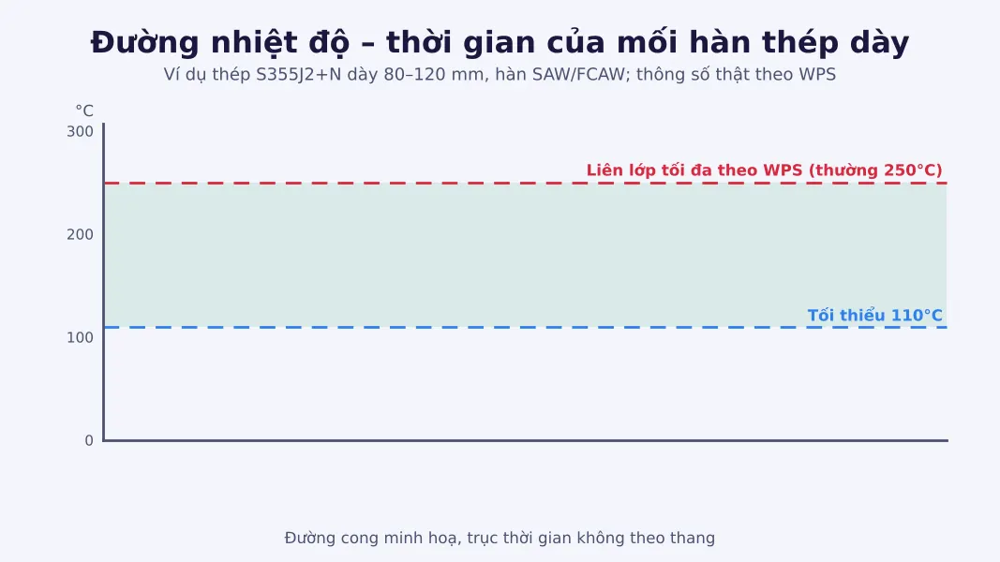
Bài này tổng hợp cách kiểm soát nhiệt độ và ủ bảo ôn để chống nứt nguội khi hàn thép dày 80–120 mm, lấy ví dụ thép S355J2+N hàn SAW và FCAW (dầm super truss, hộp, dầm I). Các con số dưới đây là ví dụ điển hình; khi thi công luôn dùng WPS đã được phê duyệt và tài liệu kỹ thuật của vật liệu hàn. Nếu chưa rõ vì sao cần các biện pháp này, hãy đọc bài cơ chế nứt nguội trước.
Biểu đồ ở đầu bài tóm tắt toàn bộ quy trình: gia nhiệt, hàn nhiều lớp trong khoảng liên lớp 110–250°C, bảo ôn, tháo bảo ôn rồi kiểm tra UT.
1. Kiểm soát vật liệu hàn và môi trường
- Thuốc hàn SAW phải khô hoàn toàn và không nhiễm bẩn. Thuốc hàn từ bao bì rách hoặc tái sử dụng bắt buộc phải sấy trước khi dùng (xem mục 2).
- Thuốc hàn đã bị ướt: tuyệt đối không dùng.
- Mối hàn CJP (Complete Joint Penetration) chỉ dùng thuốc hàn mới. Khi hàn CJP trên thép dày 80–120 mm phải dùng thuốc hàn chưa qua sử dụng (nguyên bao nguyên kiện, chưa mở hoặc mới mở trong ca). Lý do: mối hàn CJP chịu tải thiết kế toàn phần và đòi hỏi kiểm soát hydro khuếch tán chặt nhất; thuốc hàn mới có độ ẩm thấp nhất nên giảm tối đa nguy cơ nứt nguội ở HAZ và chân mối hàn.
- Thuốc hàn đã qua sử dụng chỉ dùng cho mối hàn fillet. Thuốc thu hồi từ ca trước hoặc từ bao đã mở lâu chỉ được dùng cho mối hàn góc không yêu cầu kiểm tra CJP. Tuyệt đối không dùng cho mối hàn CJP, mối hàn sửa chữa sâu hoặc bất kỳ mối hàn nào yêu cầu postheat.
- Chạy rùa SAW (SAW tractor) ngoài hiện trường: thuốc hàn đang dùng phải để trong tủ sấy cá nhân (loại nhỏ dùng giữ ấm que hàn SMAW), cắm điện và duy trì ≥ 80°C liên tục. Không để túi thuốc hở miệng hoặc đặt trực tiếp trên sàn hay bề mặt lạnh, nhất là khi trời ẩm hoặc ban đêm.
- Hàn FCAW-G (có khí bảo vệ): không hàn ở nơi gió lùa vượt quá 8 km/h (5 mph) trừ khi có lều che. Gió thổi bay khí bảo vệ làm hỏng mối hàn.
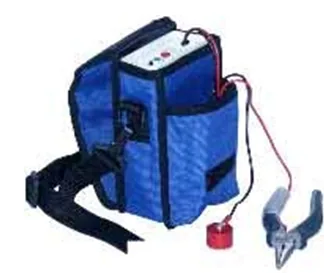
2. Sấy ủ thuốc hàn
Ví dụ theo khuyến cáo của một nhà sản xuất vật liệu hàn: sấy ở 300–350°C, tối thiểu 60 phút. Luôn theo tài liệu kỹ thuật của đúng loại thuốc hàn đang dùng.
- Lò điện có kiểm soát nhiệt độ. Sau sấy giữ trong lò giữ nhiệt ≥ 100°C cho đến khi dùng.
- Dùng trong vòng 4 giờ sau khi lấy khỏi lò (môi trường thường).
- Bao bì rách, ẩm hoặc đã mở quá 24 giờ thì bắt buộc phải sấy.
- Không sấy lại quá 2 lần; lần thứ 3 phải loại bỏ. Mỗi lần sấy phải ghi vào nhật ký vật liệu.
- Nhiệt độ sấy 300–350°C cao hơn mức tối thiểu chung (260°C); luôn tuân theo khuyến cáo nhà sản xuất vì đó là thông số đã được kiểm chứng cho đúng sản phẩm.
- Kiểm tra bao bì trước khi sấy.
- Xếp thuốc hàn thành lớp mỏng, không dày hơn 50 mm trong khay.
- Tăng nhiệt độ lò từ từ, không tăng đột ngột để tránh vón cục.
- Giữ nhiệt độ sấy tối thiểu 60 phút liên tục.
- Chuyển ngay vào lò giữ nhiệt ≥ 100°C. Nếu không có lò giữ nhiệt, dùng trong vòng 4 giờ.
- Ghi nhật ký: thời điểm sấy, nhiệt độ đạt được, thời gian giữ nhiệt, người thực hiện.
3. Chuẩn bị vát mép (groove)
Hình học mối vát (góc vát, khe hở chân, chiều sâu rãnh) ảnh hưởng trực tiếp đến nứt nguội và nứt nóng khi hàn thép dày. Kiểm soát chuẩn bị vát là bước phòng nứt từ trước khi hàn.
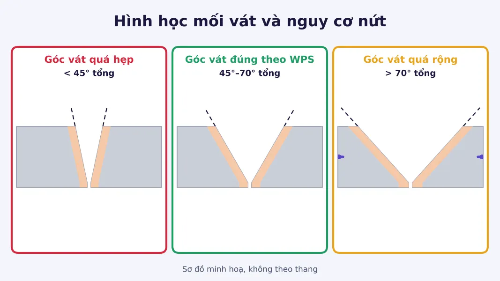
- Góc vát quá hẹp (dưới 45° tổng cho rãnh chữ V): điện cực khó tiếp cận đáy rãnh, hồ quang phải nghiêng nhiều, tạo vùng nóng chảy hẹp và sâu. Hình dạng này cản hydro thoát ra, hydro tích lũy ở chân mối hàn và HAZ, làm tăng mạnh nguy cơ nứt nguội.
- Góc vát quá rộng (trên 70° tổng): cần đắp nhiều kim loại hàn hơn nên lực co ngót ngang khi nguội lớn hơn. Trên thép dày 80–120 mm bị ngàm cứng, ứng suất co ngót tích lũy là nguồn gốc chính của nứt trễ.
- Khe hở chân sai: quá nhỏ (dưới giá trị WPS) làm điện cực không ngấu hết đáy rãnh, gây thiếu ngấu chân, một điểm tập trung ứng suất rất cao là mầm nứt. Quá lớn thì dễ cháy thủng khi hàn lớp root.
- Bề mặt vát không sạch: dầu mỡ, gỉ, sơn lót, ẩm đọng sương và bụi là nguồn hydro trực tiếp. Chúng bị hồ quang phân hủy thành nguyên tử H, hòa tan vào kim loại lỏng rồi khuếch tán vào HAZ khi nguội, gây nứt nguội ngay cả khi đã tuân thủ preheat và interpass.
Yêu cầu kiểm soát trước khi hàn:
- Đo góc vát và khe hở chân bằng dưỡng hàn hoặc thước đo rãnh; phải nằm trong dung sai WPS. Nếu vượt dung sai phải sửa trước khi hàn, không được bù bằng cách chỉnh thông số hàn.
- Mài sạch bề mặt vát và vùng xung quanh ≥ 25 mm mỗi phía bằng đá mài góc để loại gỉ, vảy cán, sơn lót, dầu mỡ; bề mặt phải sáng kim loại. Nếu có dầu mỡ thì lau bằng acetone hoặc dung môi sạch trước khi mài.
- Nếu thép có ẩm (sương, mưa): gia nhiệt bề mặt vát và vùng xung quanh lên tối thiểu 40–50°C trước khi preheat chính thức để đuổi ẩm. Không hàn lên bề mặt còn hơi ẩm nhìn thấy được.
- Kiểm tra mặt vát bằng mắt (VT) và MT nếu WPS yêu cầu. Vết cắt cháy, vết đứt do cắt plasma không đều hoặc vết nứt bề mặt phải được mài bỏ hoàn toàn trước khi hàn.
4. Hàn đa lớp: chọn phương pháp theo từng lớp
Với mối hàn CJP trên thép 80–120 mm, phương pháp hàn và thông số dây phải phù hợp với vị trí chức năng của từng lớp, không dùng một phương pháp cho mọi lớp.
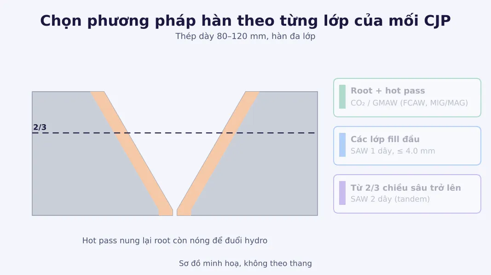
- Root và hot pass: khuyến cáo hàn CO₂ (GMAW/FCAW, khí CO₂ hoặc Ar/CO₂). Lớp root khó và dễ nứt nhất; GMAW có nhiệt lượng thấp, kiểm soát được, vũng hàn nhỏ nên điều chỉnh được độ ngấu chân mà không bị chảy xệ hay cháy thủng. SAW không làm được lớp root vì lớp thuốc hàn dày che khuất rãnh hẹp, dễ kẹt xỉ đáy rãnh. Hot pass nung lại root còn nóng để đuổi hydro tích lũy và hoàn thiện ngấu chân.
- Các lớp fill đầu (lớp 1–2 sau hot pass): SAW 1 dây, đường kính nhỏ ≤ 4.0 mm. Rãnh còn hẹp và sâu nên phải kiểm soát nhiệt lượng từng đường; dây nhỏ cho bead mỏng, dễ kiểm soát tỉ lệ sâu/rộng và tránh bead dạng "chai rượu" dễ nứt giữa tim mối hàn.
- Từ khi rãnh được lấp đầy 2/3 chiều sâu trở lên: chuyển SAW 2 dây (tandem) để tăng năng suất. Rãnh đã rộng và nông hơn nên nguy cơ bead "chai rượu" giảm. Vẫn phải bảo đảm nhiệt độ liên lớp không vượt WPS trước mỗi đường 2 dây.
Vì sao SAW 1 dây đường kính nhỏ giảm nứt hơn SAW 2–3 dây:
- Nhiệt lượng mỗi đường thấp hơn: dây 3.2–4.0 mm chạy dòng thấp hơn (thường 450–650 A so với 700–900 A của 2 dây), nên HAZ hẹp hơn và ứng suất dư tích lũy sau mỗi đường thấp hơn.
- Tỉ lệ sâu/rộng của bead thấp hơn: bead sâu và hẹp đông đặc từ hai phía vào giữa, dồn tạp chất lưu huỳnh (S) và phospho (P) về tim mối hàn nên dễ nứt nóng. Bead rộng hơn đẩy mặt đông đặc cuối lên gần bề mặt, giảm rõ nguy cơ này.
- Kiểm soát nhiệt độ liên lớp dễ hơn: SAW 2–3 dây đắp nhanh, sinh nhiệt nhanh nên dễ đẩy nhiệt độ liên lớp vượt 250°C trước khi thợ hàn kịp nhận ra. Liên lớp quá cao làm thô hạt trong HAZ, giảm độ dai va đập.
- Hydro thoát tốt hơn: khi nhiệt độ liên lớp được giữ ổn định trong vùng kiểm soát, hydro có điều kiện khuếch tán ra khỏi mối hàn.
5. Gia nhiệt (preheat)
- Ví dụ: thép S355J2+N hàn SAW và FCAW thuộc Category B; với thép dày trên 65 mm (áp dụng cho 80–120 mm), nhiệt độ gia nhiệt tối thiểu bắt buộc là 110°C (225°F) trước khi hàn.
- Vùng gia nhiệt: đều quanh điểm hàn, rộng ít nhất bằng chiều dày phôi t (80–120 mm), không nhỏ hơn 75 mm.
- Trong suốt quá trình hàn, nhiệt độ ở đầu mối hàn và cuối mối hàn không được xuống dưới 110°C.
Có hai cách gia nhiệt thường dùng: đèn oxy-gas và gia nhiệt điện (dây điện trở). Với gia nhiệt điện phải bọc bông để giữ nhiệt.
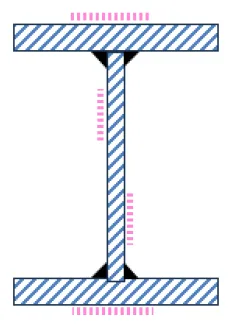
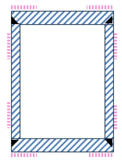
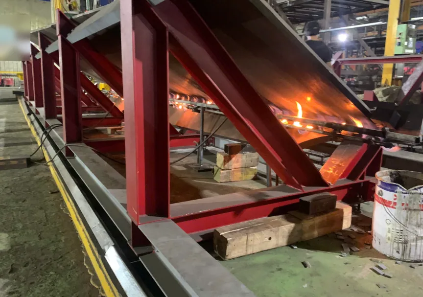
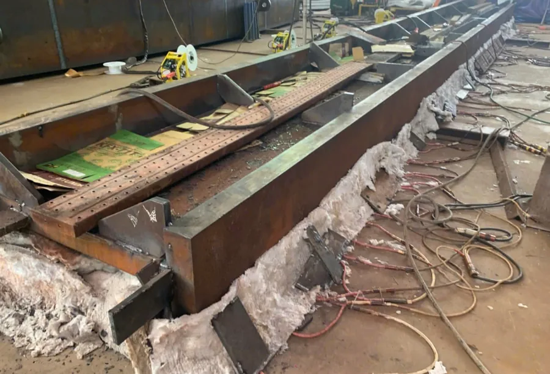
6. Đo nhiệt độ ở đâu cho đúng
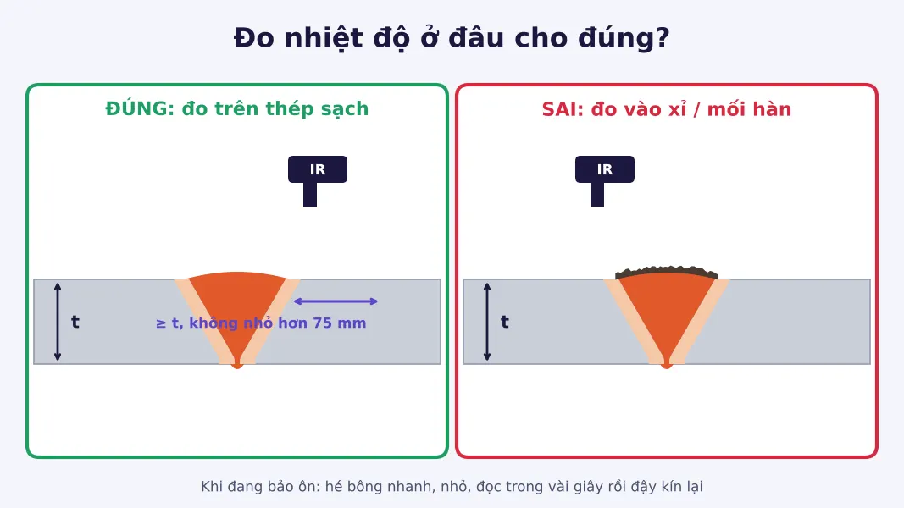
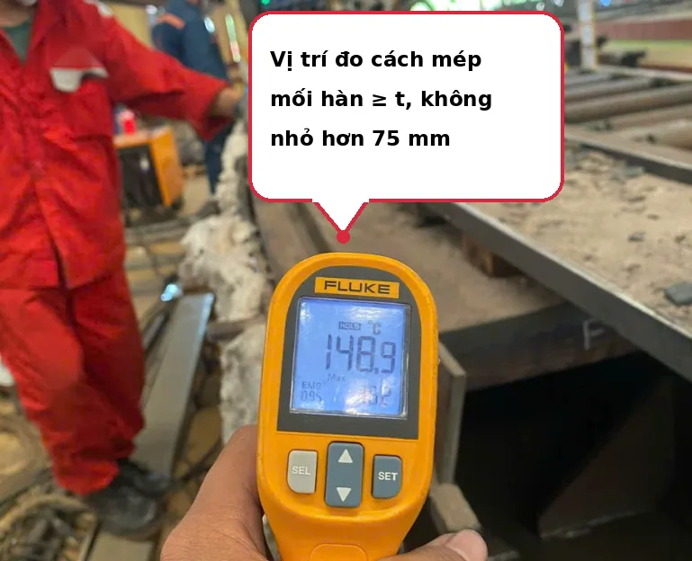
- Đo trên bề mặt kim loại cơ bản sạch ở vùng quanh điểm sắp hàn, theo mọi hướng. Không đo vào vũng hàn, mối hàn đã đắp hoặc lớp xỉ vì kết quả sai lệch lớn.
- Thép mỏng dưới 38 mm: đo cách mép mối hàn ≥ 2 lần chiều dày (ví dụ t = 25 mm thì đo cách mép ≥ 50 mm).
- Thép từ 38 mm trở lên (gồm thép 80–120 mm): đo cách mép mối hàn ≥ t, và tuyệt đối không nhỏ hơn 75 mm.
- Hàn hai tấm khác chiều dày: tính khoảng cách và nhiệt độ yêu cầu riêng cho từng tấm, hai điểm đo độc lập.
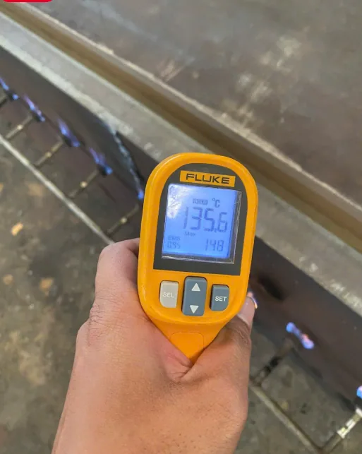
Dụng cụ đo:
- Bút sáp thử nhiệt (Tempilstik): nhanh, đơn giản; vạch sáp chảy nghĩa là đạt nhiệt độ yêu cầu. Phù hợp kiểm tra nhanh preheat.
- Súng hồng ngoại (pyrometer): tiện, không tiếp xúc; chỉ đo trên thép sạch, không đo lên xỉ hay vảy hàn bắn (độ phát xạ sai lệch).
- Cặp nhiệt điện tiếp xúc (thermocouple): chính xác nhất; nên dùng khi nghiệm thu hoặc khi nghi ngờ kết quả súng hồng ngoại.
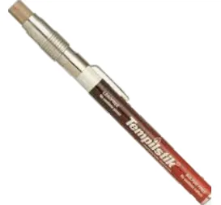
7. Nhiệt độ liên lớp và nhiệt lượng hàn
SAW có dòng hàn cao và sinh nhiệt lớn, nên khống chế nhiệt độ liên lớp là yếu tố sống còn.
- Tối thiểu ≥ 110°C: thấp hơn có nguy cơ nứt nguội.
- Tối đa theo WPS (thông thường với thép yêu cầu CVN là 250°C): cao hơn làm hạt kim loại to, giòn, mất độ dai va đập CVN ở −20°C.
Đo nhiệt độ liên lớp ngay trước khi mồi hồ quang cho mỗi đường hàn, và ngay trước lớp thứ 2 cùng các lớp tiếp theo của mối hàn nhiều lớp. Ghi vào nhật ký hàn mỗi lần đo. Dưới 110°C thì dừng và sấy lại. Trên 250°C thì dừng và chờ nguội: để chi tiết nguội tự nhiên trong không khí, không dùng quạt hay nước, và chỉ hàn tiếp khi nhiệt độ đã xuống dưới 250°C.
8. Xử lý khi dừng hàn giữa chừng
Để tránh nứt nguội phải duy trì nhiệt độ gia nhiệt trong suốt quá trình hàn. Khi buộc phải dừng, tuân thủ đúng quy trình dưới đây.
Dừng có kế hoạch (hết ca, nghỉ giải lao):
- Chọn điểm dừng hợp lý: không dừng ở giao điểm, góc kết cấu hay vùng tập trung ứng suất; ưu tiên giữa đoạn hàn thẳng. Chỉ dừng khi đã hàn được ít nhất 2 lớp.
- Điền đầy crater trước khi ngắt hồ quang để tránh nứt crater.
- Cạo sạch xỉ tại điểm dừng khi kim loại còn nóng.
- Bọc bảo ôn ngay khi nhiệt độ còn trên 110°C bằng bông gốm hoặc bông thủy tinh, không để chi tiết nguội trần ngoài không khí.
- Ghi bàn giao ca: nhiệt độ lúc dừng, vị trí điểm dừng, thời gian và tình trạng bảo ôn.
Ca mới bắt buộc đo lại nhiệt độ thực tế. Nếu đã xuống dưới 110°C thì sấy lại đến ≥ 110°C rồi mới hàn tiếp.
Dừng đột xuất (mất điện, sự cố thiết bị): bọc ngay bông bảo ôn để giữ nhiệt. Khi có điện lại:
- Nhiệt độ vẫn ≥ 110°C: làm sạch xỉ, kiểm tra crater, sấy lại về 110°C nếu cần rồi hàn tiếp.
- Nhiệt độ < 110°C: bắt buộc sấy lại toàn bộ vùng hàn về ≥ 110°C trước khi hàn tiếp.
- Nguội hoàn toàn về nhiệt độ môi trường và dừng quá 4 giờ: kiểm tra UT/MT tại điểm dừng để phát hiện nứt trễ có thể đã hình thành, rồi sấy lại toàn bộ và hàn tiếp.
9. Bọc bảo ôn ngay sau khi hàn
- Cạo sạch xỉ trước khi bọc.
- Bọc ngay khi nhiệt độ còn trên 110°C bằng bông gốm hoặc bông thủy tinh.
- Phạm vi bọc: phủ kín đường hàn và mở rộng mỗi phía ≥ t (80–120 mm) tính từ mép mối hàn, và không nhỏ hơn 75 mm trong mọi trường hợp. Bó chặt mép bằng đai thép hoặc nam châm chịu nhiệt.
- Cấm dùng quạt gió hoặc nước làm nguội khi thép còn nóng, đặc biệt trên 315°C (600°F), vì gây sốc nhiệt và nứt.
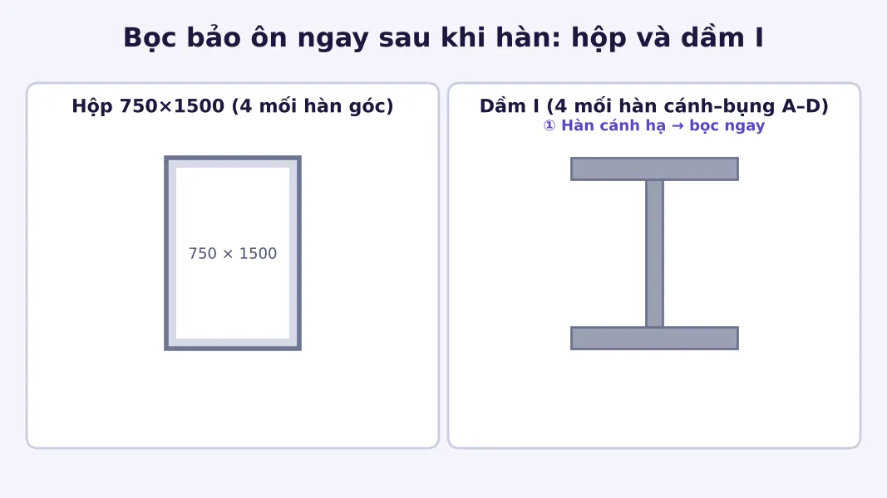
Hộp 750×1500 mm (4 đường hàn dọc ở 4 góc):
- Hàn xong mỗi đường góc thì làm sạch xỉ và bọc tạm ngay, phạm vi ≥ t mỗi phía.
- Hàn và bọc tạm lần lượt các góc còn lại, đo nhiệt độ liên lớp trước mỗi đường mới.
- Sau khi đủ 4 góc, quấn bông liên tục quanh 4 mặt, mép bông chồng nhau ≥ 100 mm ở góc hộp.
- Đặt đai thép cách nhau ≤ 500 mm, siết cho bông ôm sát, không xệ, không để gió lọt.
- Bịt kín 2 đầu hộp để gió đối lưu không luồn qua lòng hộp làm nguội từ bên trong.
Hộp dài trên 3 m: bố trí ít nhất 2 thợ bọc từ 2 đầu tiến vào giữa để bọc kín trong thời gian ngắn nhất.
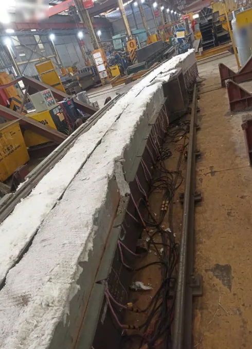
Dầm I (4 mối hàn cánh–bụng):
- Khi hàn xong 2 mối ở cánh hạ thì bọc bảo ôn ngay cho 2 mối này.
- Lật dầm để hàn cánh thượng đúng quy trình; hàn xong thì bọc bảo ôn cho 2 mối cánh thượng.
- Nhét bông phụ vào 4 góc âm giữa cánh và bụng, nơi dễ hở nhiệt nhất. Không để lộ kim loại tại góc.
- Đặt đai thép vắt qua toàn bộ mặt cắt I, cách nhau ≤ 500 mm, giữ bông ôm chặt vào từng mặt phẳng của cánh và bụng.
Lưu ý: bụng dầm lớn nên nhiệt truyền đi nhanh, và nhiệt ở mối hàn bên dưới không truyền lên mối hàn bên trên đủ. Vì vậy mối hàn nào hàn xong thì phải bọc bảo ôn ngay để bảo đảm nhiệt độ đúng yêu cầu.
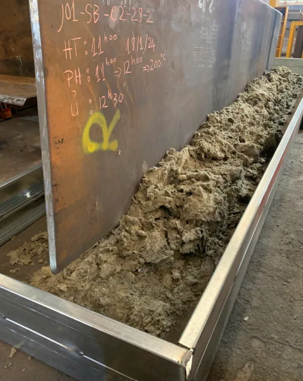
10. Đo bằng súng hồng ngoại khi đang ủ và lộ trình tháo bảo ôn
Chỉ mở hé thật nhanh và nhỏ một góc tấm bông cho tia laser chạm bề mặt kim loại (cách mép hàn ≥ 75 mm), đọc trong vài giây rồi đậy kín, chèn chặt ngay.
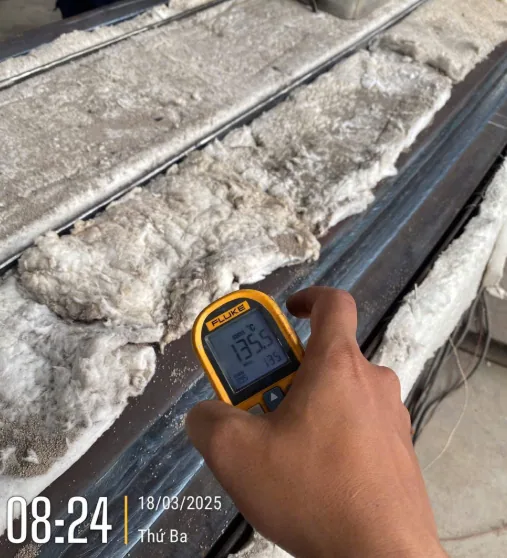
- 0–12 giờ đầu: tuyệt đối không mở hé để đo.
- Sau 12–24 giờ: hé đo lần đầu, nhanh và nhỏ.
- Nếu còn trên 100°C: đợi thêm 4–6 giờ mới đo lại.
- Khi ≤ 50°C: được tháo hoàn toàn lớp bảo ôn.
11. Postheat: khử hydro khuếch tán
Postheat bắt buộc khi: (1) mối hàn CJP trên thép dày từ 80 mm trở lên; (2) được chỉ định cụ thể trong tiêu chuẩn, hợp đồng hoặc yêu cầu của kỹ sư thiết kế; (3) mối hàn sửa chữa có rãnh đào sâu hơn 12 mm (1/2 inch).
- Postheat phải được thực hiện ngay lập tức sau khi hàn xong lớp cuối: không để mối hàn nguội xuống dưới nhiệt độ preheat tối thiểu (110°C) trước khi bắt đầu nâng nhiệt postheat.
- Không được gián đoạn: chuyển từ hàn sang postheat phải liên tục. Đây là điểm khác cốt lõi so với ủ bảo ôn thông thường.
Thông số nhiệt độ và thời gian giữ nhiệt:
- Nhiệt độ postheat (cả mối hàn thông thường và mối hàn sửa chữa): tối thiểu 230°C (450°F), tối đa 290°C (550°F).
- Mối hàn thông thường: giữ nhiệt tối thiểu 1 giờ cho mỗi 25 mm chiều dày mối hàn, tối đa 2 giờ (chọn giá trị nhỏ hơn). Ví dụ thép 100 mm: 100/25 = 4 giờ, chọn nhỏ hơn giữa 4 giờ và 2 giờ là 2 giờ.
- Mối hàn sửa chữa: 1 giờ cho mỗi 25 mm chiều sâu rãnh đào, và không ít hơn 1 giờ trong mọi trường hợp. Ví dụ rãnh sâu 75 mm: 75/25 = 3 giờ.
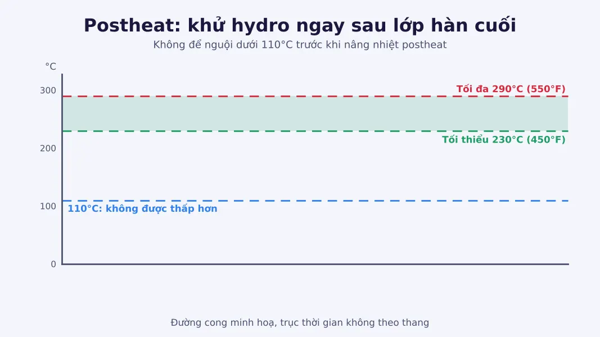
- Hoàn tất lớp hàn cuối: điền đầy crater, ngắt hồ quang. Không để chi tiết nguội và giữ thiết bị gia nhiệt sẵn sàng.
- Đo nhiệt độ ngay tại mối hàn (cách mép ≥ 75 mm); bảo đảm vẫn ≥ 110°C trước khi nâng nhiệt postheat.
- Nâng nhiệt từ từ lên 230–290°C, không quá nhanh để tránh sốc nhiệt, bằng đèn gas hoặc điện trở bọc quanh mối hàn.
- Giữ nhiệt 230–290°C trong suốt thời gian đã tính. Đo nhiều điểm dọc mối hàn để đạt nhiệt đều và ghi nhiệt độ vào nhật ký mỗi 15–20 phút.
- Tắt nguồn gia nhiệt, bọc kín toàn bộ mối hàn bằng bông gốm và làm nguội chậm theo mục 9. Không làm nguội nhanh.
- Sau khi nguội hoàn toàn, chờ tối thiểu 48 giờ rồi kiểm tra UT và MT, đặc biệt chú ý HAZ và chân mối hàn CJP.
Phân biệt postheat và PWHT: postheat không thay thế được PWHT (Post Weld Heat Treatment). Postheat chỉ loại hydro khuếch tán để ngăn nứt nguội. Nếu thiết kế yêu cầu PWHT (thường 580–650°C trong lò) thì phải thực hiện PWHT riêng theo tiêu chuẩn áp dụng.
12. Kiểm tra UT nứt nguội: đặt đầu dò trực tiếp trên Cap mối hàn
Kiểm tra siêu âm (UT) phải thực hiện sau khi mối hàn hoàn tất và nguội hẳn ít nhất 48 giờ (và sau postheat nếu có) để phát hiện nứt trễ.
Nứt nguội trên thép dày thường là vết nứt ngang vuông góc với trục mối hàn, hoặc nứt dưới lớp hàn ở HAZ. Nếu chỉ quét từ hai bên mối hàn bằng đầu dò đặt trên kim loại cơ bản, chùm siêu âm chạy song song với mặt phẳng vết nứt ngang nên phản xạ yếu và dễ bỏ sót. Để phát hiện được loại khuyết tật này, phải quét thêm bằng đầu dò đặt trực tiếp trên Cap mối hàn, cho chùm đi dọc trục mối hàn để đập vuông góc vào mặt vết nứt.
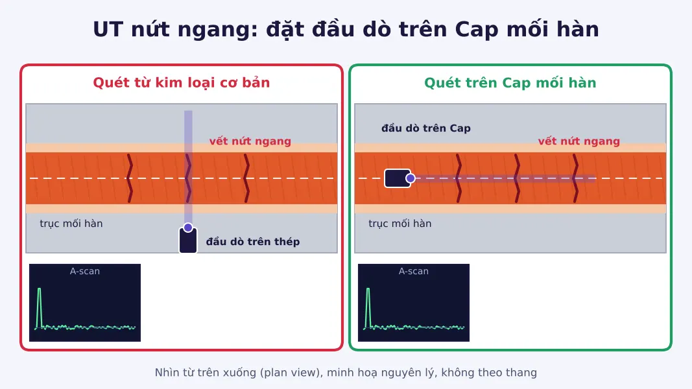
- Thời điểm: chỉ kiểm tra sau khi nguội hẳn ít nhất 48 giờ (hoặc theo thời gian chờ WPS, tiêu chuẩn, hợp đồng quy định).
- Chuẩn bị bề mặt Cap: cạo sạch xỉ, vảy hàn bắn, gờ nhọn. Đẩy đầu dò dọc theo chiều dài mối hàn với mặt tiếp xúc tốt; nếu Cap quá gồ ghề thì chỉ mài bằng từng đoạn dài 200–800 mm (không cần mài hết toàn bộ chiều dài). Mức độ mài và giới hạn không được mài thấp hơn bề mặt kim loại cơ bản theo bản vẽ, quy trình UT hoặc tiêu chuẩn áp dụng. Lau sạch và bôi chất tiếp âm đều.
- Đầu dò và đường DAC: quét trên Cap bằng đầu dò góc 45°, kích thước tinh thể 8×9 mm; tần số theo quy trình UT đã duyệt. Dựng đường DAC (đường hiệu chỉnh biên độ theo cự ly) từ lỗ chuẩn Ø1.5 mm (lỗ khoan ngang, SDH) ở ba vị trí 1, 2, 3 có cự ly khác nhau. Hiệu chỉnh độ suy hao do bề mặt Cap khác bề mặt thép cơ bản nếu quy trình yêu cầu. Thép 80–120 mm cần chùm đi xa nên phải kiểm tra độ nhạy ở cự ly lớn nhất sẽ dùng.
- Độ nhạy quét: cộng tối thiểu 14 dB so với mức DAC để kiểm tra (các đường DAC 100% / 50% / 20% tương ứng 0 / −6 / −14 dB). Với chiều dày t lớn hơn 50 mm (gồm thép 80–120 mm của bài này) cộng 16–18 dB.
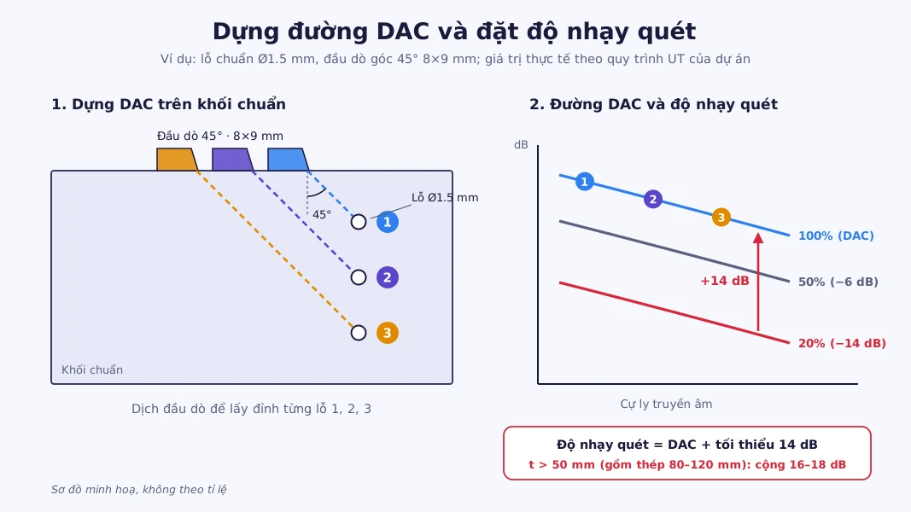
- Quét trên Cap: đặt đầu dò 45° trên Cap, hướng chùm dọc theo trục mối hàn; quét từ hai đầu đoạn kiểm tra đi vào nhau (đầu dò bên trái hướng sang phải, đầu dò bên phải hướng sang trái), mỗi đoạn dài 200–800 mm; dịch đầu dò ngang qua hết bề rộng Cap. Kết hợp quét ngang mối hàn từ hai bên trên kim loại cơ bản để phát hiện các khuyết tật theo phương dọc.
- Khi có tín hiệu nghi ngờ: kết hợp đầu dò góc khác, 60° và 70° (tinh thể 20×22 mm), đặt trên kim loại cơ bản tại vị trí nghi ngờ, chùm đi theo hướng vuông góc với trục mối hàn, để kiểm tra lại.
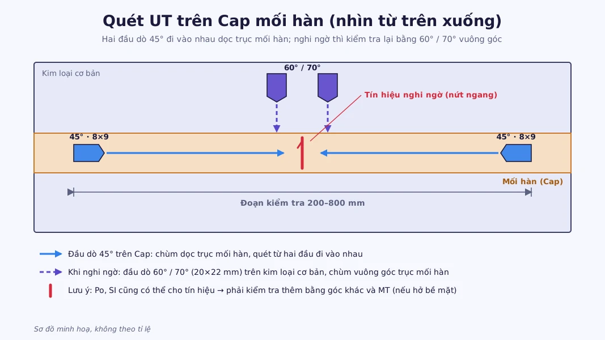
- Vùng cần chú ý: HAZ và chân mối hàn CJP, điểm bắt đầu và kết thúc đường hàn, vị trí đã dừng hàn giữa chừng, vùng bị ngàm lớn.
- Đánh giá và ghi nhận: khi có tín hiệu nghi ngờ, xác định lại bằng nhiều góc chùm, đo vị trí và chiều dài, đối chiếu tiêu chuẩn chấp nhận của dự án (vết nứt không được chấp nhận). Ghi đầy đủ vào biên bản.
Lưu ý: các lỗi rỗ khí (Po) và lẫn xỉ (SI) cũng có thể cho tín hiệu, nên không kết luận chỉ bằng một góc chùm: phải kết hợp thêm đầu dò góc khác (20×22 mm). Kiểm tra MT bổ sung để xác nhận các tín hiệu hở ra bề mặt hoặc sát bề mặt; khuyết tật nằm sâu bên trong mối hàn dày không kết luận được bằng MT, phải đánh giá bằng nhiều góc chùm UT theo quy trình của dự án.
UT phải do người có chứng chỉ phù hợp thực hiện theo quy trình đã được phê duyệt. Các thông số trong mục này là hướng dẫn chung, thông số cụ thể theo quy trình UT của dự án.
Tài liệu này đọc cùng WPS đã được phê duyệt. Mọi thay đổi thông số phải được kỹ sư hàn có chứng chỉ (IWE/CWEng) phê duyệt.
This article summarises temperature control and insulation against cold cracking in welding steel 80–120 mm thick, using S355J2+N steel welded by SAW and FCAW as the example (super-truss beams, boxes, I-beams). The figures below are typical examples; on the job always use the approved WPS and the consumable manufacturer's data. If you are not sure why these measures are needed, read how cold cracking happens first.
The chart at the top of the page summarises the whole process: preheat, multipass welding within the 110–250°C interpass window, insulation, removal of the insulation and then UT.
1. Controlling consumables and environment
- SAW flux must be completely dry and uncontaminated. Flux from torn packaging or flux being reused must be dried before use (see section 2).
- Wet flux must never be used.
- CJP (Complete Joint Penetration) welds use new flux only. When welding CJP on 80–120 mm steel, use unused flux (sealed bags, unopened or opened only during the current shift). Reason: a CJP weld carries the full design load and needs the tightest control of diffusible hydrogen; new flux has the lowest moisture, so it minimises the risk of cold cracking in the HAZ and at the weld root.
- Used flux is for fillet welds only. Flux recovered from the previous shift, or from bags opened long ago, may only be used on fillet welds that do not require CJP inspection. Never use it for CJP welds, deep repair welds or any weld that requires postheat.
- When running a SAW tractor on site: the flux in use must be kept in a personal oven (the small type used to keep SMAW electrodes warm), plugged in and held at ≥ 80°C continuously. Never leave the flux bag open or put it directly on the floor or a cold surface, especially in damp weather or at night.
- FCAW-G (gas shielded): do not weld in draughts above 8 km/h (5 mph) unless there is a windshield. Wind blows the shielding gas away and ruins the weld.
2. Drying flux
Example following one consumable manufacturer's recommendation: dry at 300–350°C for at least 60 minutes. Always follow the data sheet for the exact flux in use.
- Use a temperature-controlled electric oven. After drying, hold the flux in a holding oven at ≥ 100°C until use.
- Use it within 4 hours of leaving the oven (ordinary conditions).
- Torn or damp packaging, or packaging open for more than 24 hours, must be dried.
- Never dry the same flux more than twice; scrap it instead of drying it a third time. Record every drying in the material log.
- A drying temperature of 300–350°C is above the general minimum (260°C); always follow the manufacturer's recommendation because it has been proven for that specific product.
- Check the packaging before drying.
- Spread the flux in a thin layer, no deeper than 50 mm in the tray.
- Raise the oven temperature gradually; a sudden rise causes caking.
- Hold the drying temperature for at least 60 minutes continuously.
- Move it straight into a holding oven at ≥ 100°C. If there is none, use it within 4 hours.
- Keep a log: drying time, temperature reached, hold time, operator.
3. Groove (bevel) preparation
Groove geometry (bevel angle, root gap, groove depth) directly affects cold cracking and hot cracking in thick-plate welding. Controlling the groove preparation is crack prevention before welding even starts.
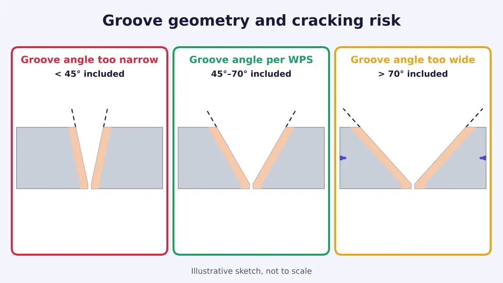
- Groove angle too narrow (an included angle below 45° for a V-groove): the electrode can hardly reach the root and the arc has to be steeply inclined, producing a narrow, deep fusion zone. This shape hinders hydrogen escape, so hydrogen builds up at the root and in the HAZ and sharply raises the cold-cracking risk.
- Groove angle too wide (an included angle above 70°): much more weld metal is needed, so the transverse shrinkage force on cooling is larger. On 80–120 mm steel held rigidly by the structure, the accumulated shrinkage stress is the main cause of delayed cracking.
- Wrong root gap: too small (below the WPS value) and the electrode cannot fuse the whole root, causing lack of root fusion, a very high stress concentration that is a crack nucleus. Too large and the root pass burns through.
- Dirty bevel faces: oil, grease, rust, primer, dew and dust are direct sources of hydrogen. The arc breaks them down into H atoms that dissolve into the liquid metal and diffuse into the HAZ on cooling, causing cold cracks even when preheat and interpass are fully respected.
Controls required before welding:
- Measure bevel angle and root gap with a weld gauge or groove gauge; they must be within WPS tolerance. If out of tolerance, correct them before welding; never compensate by changing welding parameters.
- Grind the bevel face and the surrounding area ≥ 25 mm each side with an angle grinder to remove rust, mill scale, primer and grease; the surface must be bright metal. If there is oil, wipe with acetone or a clean solvent before grinding.
- If the steel is damp (dew, rain): heat the bevel face and surrounding area to at least 40–50°C before the main preheat to drive off the moisture. Never weld on a surface with visible moisture.
- Inspect the bevel face visually (VT) and by MT if the WPS requires it. Burnt cuts, uneven plasma-cut gouges or surface cracks must be ground out completely before welding.
4. Multipass welding: choose the process for each layer
For a CJP weld on 80–120 mm steel, the welding process and wire parameters must suit the function of each layer; one process must not be used for all layers.
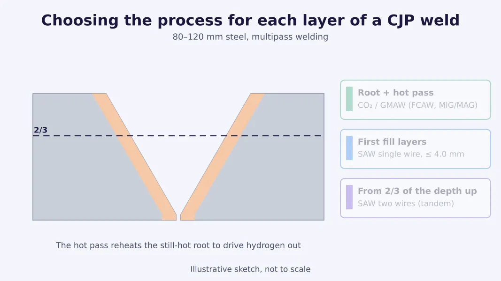
- Root and hot pass: CO₂ welding recommended (GMAW/FCAW, CO₂ or Ar/CO₂ gas). The root is the hardest and most crack-prone layer; GMAW has low, controllable heat input and a small weld pool, so root penetration can be controlled without sagging or burn-through. SAW cannot do the root because the thick flux layer hides the narrow groove and slag is easily trapped at the bottom. The hot pass reheats the still-hot root to drive out accumulated hydrogen and complete root fusion.
- First fill layers (layers 1–2 after the hot pass): SAW single wire, small diameter ≤ 4.0 mm. The groove is still narrow and deep, so heat input must be controlled run by run; a small wire gives a thinner bead that is easier to keep at a safe depth-to-width ratio and avoids wineglass-shaped beads that crack at the centreline.
- Once the groove is filled to 2/3 of its depth or more: switch to SAW two wires (tandem) to raise productivity. The groove is wider and shallower, so the risk of wineglass-shaped beads is lower. You must still make sure interpass temperature does not exceed the WPS before every two-wire run.
Why single small-diameter SAW wire cracks less than 2–3 wire SAW:
- Lower heat input per run: a 3.2–4.0 mm wire runs at lower current (typically 450–650 A against 700–900 A for two wires), so the HAZ is narrower and the residual stress accumulated after each run is lower.
- Lower depth-to-width ratio: a deep, narrow bead solidifies from both sides towards the middle, pushing sulphur (S) and phosphorus (P) to the centreline where hot cracking starts. A wider bead moves the last solidification plane up near the surface, which clearly reduces this risk.
- Easier interpass control: 2–3 wire SAW deposits fast and builds heat fast, so interpass temperature can exceed 250°C before the welder notices. Too high an interpass coarsens the grain in the HAZ and lowers impact toughness.
- Better hydrogen escape: when interpass temperature is held steady within the controlled range, hydrogen has the conditions to diffuse out of the weld.
5. Preheat
- Example: S355J2+N welded by SAW and FCAW falls in Category B; for steel thicker than 65 mm (including 80–120 mm) the mandatory minimum preheat before welding is 110°C (225°F).
- Heated zone: uniform around the weld, at least as wide as the plate thickness t (80–120 mm) and never less than 75 mm.
- Throughout welding, the temperature at the start and at the end of the weld must not fall below 110°C.
Two heating methods are commonly used: oxy-gas torches and electric heating (resistance cables). With electric heating the area must be covered with blanket to hold the heat.
6. Where to measure the temperature
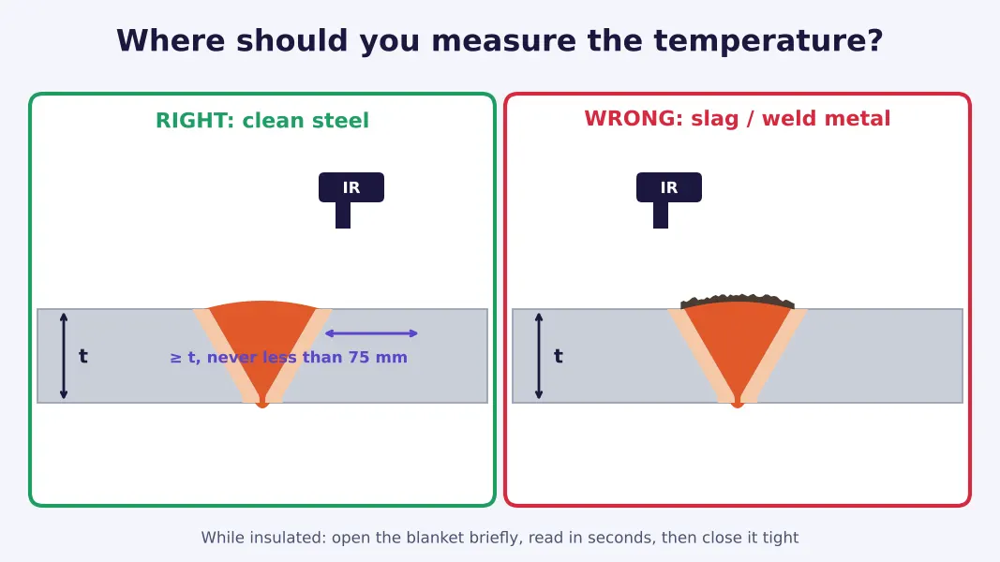
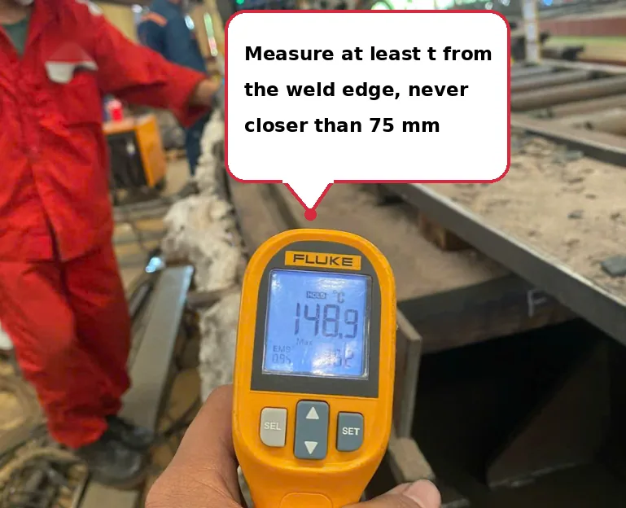
- Measure on clean base-metal surface around the point about to be welded, in every direction. Never measure on the weld pool, deposited weld or slag, because the readings are badly off.
- Thin steel under 38 mm: measure at least 2 × the thickness from the weld edge (for example t = 25 mm means at least 50 mm from the edge).
- Steel of 38 mm and over (including 80–120 mm): measure at least t from the weld edge and never closer than 75 mm.
- Joining plates of different thickness: work out the distance and required temperature separately for each plate, with two independent measuring points.
Measuring tools:
- Temperature-indicating crayon (Tempilstik): quick and simple; a streak that melts means the required temperature has been reached. Good for quick preheat checks.
- Infrared gun (pyrometer): convenient and non-contact; use it only on clean steel, never on slag or weld spatter (wrong emissivity).
- Contact thermocouple: the most accurate; use it for acceptance or when an infrared reading is in doubt.
7. Interpass temperature and heat input
SAW uses high current and generates a lot of heat, so limiting the interpass temperature is vital.
- Minimum ≥ 110°C: below it there is a risk of cold cracking.
- Maximum per WPS (typically 250°C for steel with CVN requirements): above it the grain coarsens, the metal becomes brittle and CVN toughness at −20°C is lost.
Measure the interpass temperature just before striking the arc for each run, and just before the second and later layers of a multipass weld. Record every reading in the welding log. Below 110°C: stop and reheat. Above 250°C: stop and wait. Let the part cool naturally in air, with no fans or water, and weld on only when it is below 250°C.
8. Handling a stop in the middle of welding
To avoid cold cracking the preheat temperature must be maintained throughout welding. When a stop cannot be avoided, follow the procedure below.
Planned stop (end of shift, long break):
- Choose a sensible stop point: not at an intersection, a structural corner or a stress concentration; prefer the middle of a straight weld. Stop only after at least 2 layers have been welded.
- Fill the crater before breaking the arc to avoid crater cracks.
- Chip the slag at the stop point while the metal is still hot.
- Insulate immediately with ceramic or glass wool while the temperature is still above 110°C; never leave the part to cool bare in the air.
- Record in the shift handover log: temperature at the stop, location of the stop, time and condition of the insulation.
At the start of the next shift, re-measure the actual temperature. If it has dropped below 110°C, reheat to ≥ 110°C before welding on.
Unplanned stop (power cut, equipment failure): wrap insulation on immediately to hold the heat. When power returns:
- Temperature still ≥ 110°C: clean the slag, check the crater, reheat to 110°C if needed and weld on.
- Temperature < 110°C: you must reheat the whole weld zone to ≥ 110°C before welding on.
- Cooled completely to ambient and stopped for more than 4 hours: carry out UT/MT at the stop point to find any delayed crack that may have formed, then reheat the whole zone and weld on.
9. Insulating right after welding
- Chip off the slag before wrapping.
- Wrap with ceramic or glass wool while the temperature is still above 110°C.
- Extent: cover the weld completely and extend at least t (80–120 mm) on each side from the weld edge, and never less than 75 mm in any case. Secure the edges with steel straps or heat-resistant magnets.
- Never use fans or water to cool hot steel, especially above 315°C (600°F), because it causes thermal shock and cracking.
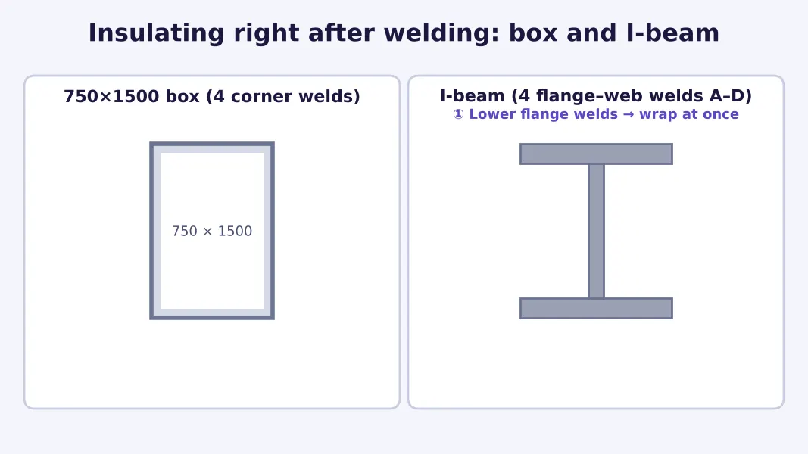
750×1500 mm box (4 longitudinal welds at the 4 corners):
- As soon as each corner weld is done, clean the slag and wrap it temporarily, covering ≥ t on each side.
- Weld and temporarily wrap the remaining corners in turn, checking interpass temperature before each new run.
- After all 4 corners, wrap the blanket continuously round the 4 faces, overlapping ≥ 100 mm at the box corners.
- Fit steel straps at ≤ 500 mm spacing, tight enough that the blanket hugs the steel with no sag or draught.
- Close both box ends so convection draughts do not run through the box and cool it from inside.
Box longer than 3 m: use at least 2 workers wrapping from both ends towards the middle so the whole length is covered in the shortest time.
I-beam (4 flange–web welds):
- When the 2 welds on the lower flange are done, wrap those 2 welds immediately.
- Flip the beam to weld the upper flange according to the procedure; when done, wrap the 2 upper-flange welds.
- Stuff extra blanket into the 4 inner corners between flange and web, where heat leaks most easily. Leave no bare metal at the corners.
- Fit steel straps across the whole I section at ≤ 500 mm spacing, holding the blanket tight against every face of the flanges and web.
Note: the web of a large beam conducts heat away fast, and the heat from the lower welds does not reach the upper welds sufficiently. So as soon as a weld is finished it must be insulated at once to keep the temperature as required.
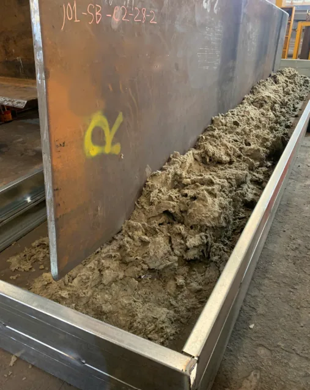
10. Infrared readings under the insulation and removal schedule
Open only a small corner of the blanket, very briefly, so the laser reaches the metal surface (at least 75 mm from the weld edge); read it within seconds, then close it and pack it tight at once.
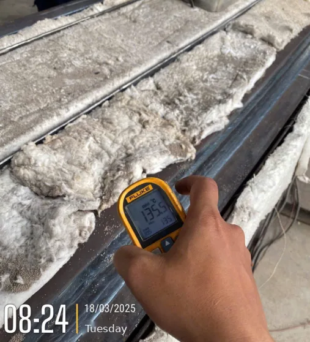
- First 0–12 hours: never open the blanket to measure.
- After 12–24 hours: first quick, small peek.
- If still above 100°C: wait another 4–6 hours before measuring again.
- At ≤ 50°C: the insulation may be removed completely.
11. Postheat: removing diffusible hydrogen
Postheat is mandatory when: (1) a CJP weld on steel 80 mm thick or more; (2) it is specifically required by the standard, the contract or the design engineer; (3) a repair weld with an excavated groove deeper than 12 mm (1/2 inch).
- Postheat must start immediately after the last pass: the weld must not cool below the minimum preheat temperature (110°C) before postheat heating begins.
- No interruption: the transition from welding to postheat must be continuous. This is the key difference from ordinary slow cooling under insulation.
Temperature and hold-time parameters:
- Postheat temperature (both ordinary and repair welds): minimum 230°C (450°F), maximum 290°C (550°F).
- Ordinary welds: hold for at least 1 hour per 25 mm of weld thickness, up to a maximum of 2 hours (take the smaller value). Example 100 mm steel: 100/25 = 4 hours, and the smaller of 4 hours and 2 hours is 2 hours.
- Repair welds: 1 hour per 25 mm of excavation depth, and never less than 1 hour. Example a 75 mm deep groove: 75/25 = 3 hours.
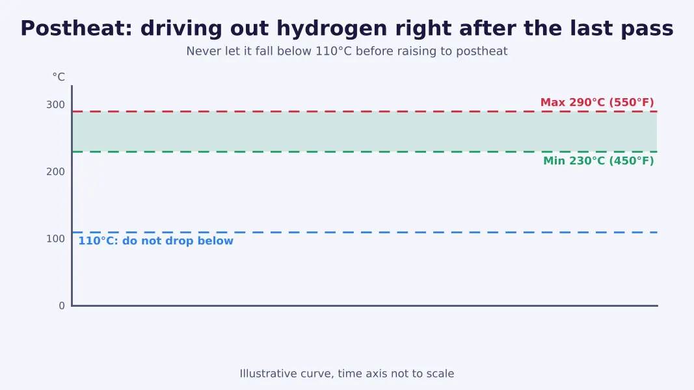
- Finish the last pass: fill the crater and break the arc. Do not let the part cool, and keep the heating equipment ready.
- Measure the temperature at the weld at once (at least 75 mm from the edge); make sure it is still ≥ 110°C before heating up for postheat.
- Heat up gradually to 230–290°C, not too fast to avoid thermal shock, using gas torches or resistance heaters wrapped round the weld.
- Hold 230–290°C for the whole calculated time. Measure at several points along the weld to reach uniform temperature, and log the temperature every 15–20 minutes.
- Switch off the heating, wrap the whole weld tightly in ceramic blanket and cool slowly as in section 9. Never cool it quickly.
- After it has cooled completely, wait at least 48 hours and then test by UT and MT, paying particular attention to the HAZ and the CJP root.
Postheat versus PWHT: postheat cannot replace PWHT (Post Weld Heat Treatment). Postheat only removes diffusible hydrogen to prevent cold cracking. If the design requires PWHT (typically 580–650°C in a furnace), PWHT must be carried out separately to the applicable standard.
12. UT for cold cracks: put the probe directly on the weld cap
Ultrasonic testing (UT) must be done after the weld is complete and has cooled completely for at least 48 hours (and after postheat, if any) to find delayed cracks.
Cold cracks in thick steel are often transverse cracks square to the weld axis, or underbead cracks in the HAZ. If you only scan from both sides of the weld with the probe on the base metal, the beam runs parallel to the plane of a transverse crack, so the echo is weak and the crack is easily missed. To find this kind of defect you must also scan with the probe placed directly on the weld cap, sending the beam along the weld axis so that it strikes the crack face square-on.
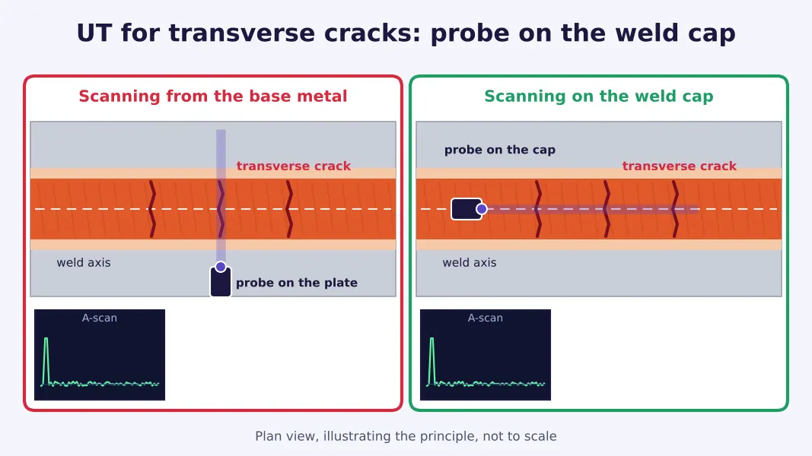
- Timing: test only after the weld has cooled completely for at least 48 hours (or the waiting time set by the WPS, standard or contract).
- Cap surface preparation: chip off slag, spatter and sharp ridges. Push the probe along the weld length on a surface that gives good contact; if the cap is too rough, grind it flat only over segments 200–800 mm long (there is no need to grind the whole length). The amount of grinding, and the limit that the cap must not be ground below the base-metal surface, follow the drawing, the UT procedure or the applicable standard. Wipe it clean and apply couplant evenly.
- Probe and DAC curve: scan on the cap with a 45° angle probe, 8×9 mm crystal; frequency follows the approved UT procedure. Build the DAC (distance–amplitude correction) curve from a Ø1.5 mm reference hole (side-drilled hole, SDH) at three positions 1, 2 and 3 at different distances. Correct for the surface-coupling loss of the cap compared with the base metal if the procedure requires it. Steel 80–120 mm thick needs a long sound path, so check sensitivity at the longest range that will be used.
- Scanning sensitivity: add at least 14 dB to the DAC level for testing (the 100% / 50% / 20% DAC lines correspond to 0 / −6 / −14 dB). For thickness t greater than 50 mm (which includes the 80–120 mm steel in this article) add 16–18 dB.
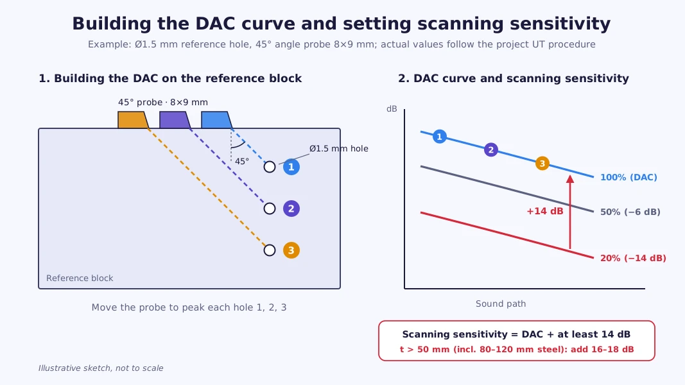
- Scanning on the cap: place the 45° probe on the cap with the beam directed along the weld axis; scan from both ends of the test segment towards each other (the left probe pointing right, the right probe pointing left), each segment 200–800 mm long, and shift the probe across the full width of the cap. Combine this with scanning across the weld from both sides on the base metal to find defects running lengthways.
- When a suspect signal appears: re-check it with other angle probes, 60° and 70° (20×22 mm crystal), placed on the base metal at the suspect position with the beam perpendicular to the weld axis.
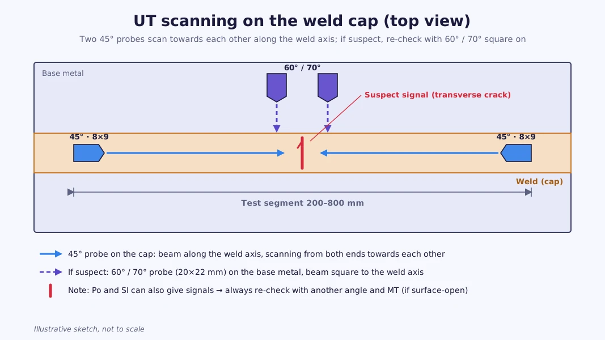
- Areas needing attention: the HAZ and CJP root, the start and end of each run, positions where welding was stopped midway, and highly restrained areas.
- Evaluation and recording: when a suspect signal appears, re-check it with several beam angles, measure its position and length and compare it with the project acceptance standard (cracks are not acceptable). Record everything in the report.
Note: porosity (Po) and slag inclusions (SI) can also give signals, so never conclude from a single beam angle: always combine with another angle probe (20×22 mm). Add MT to confirm signals that are open to the surface or very close to it; a defect deep inside a thick weld cannot be concluded by MT and must be evaluated with several UT beam angles following the project procedure.
UT must be carried out by suitably certified personnel following an approved procedure. The parameters in this section are general guidance; specific values follow the project's UT procedure.
Read this document together with the approved WPS. Any change of parameters must be approved by a certified welding engineer (IWE/CWEng).